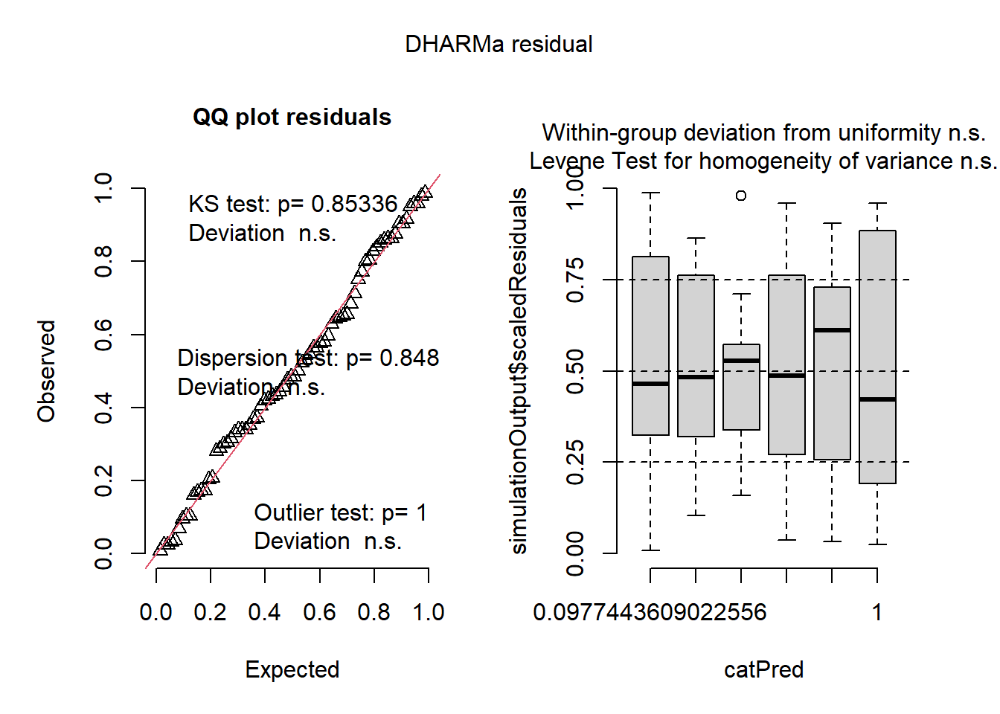
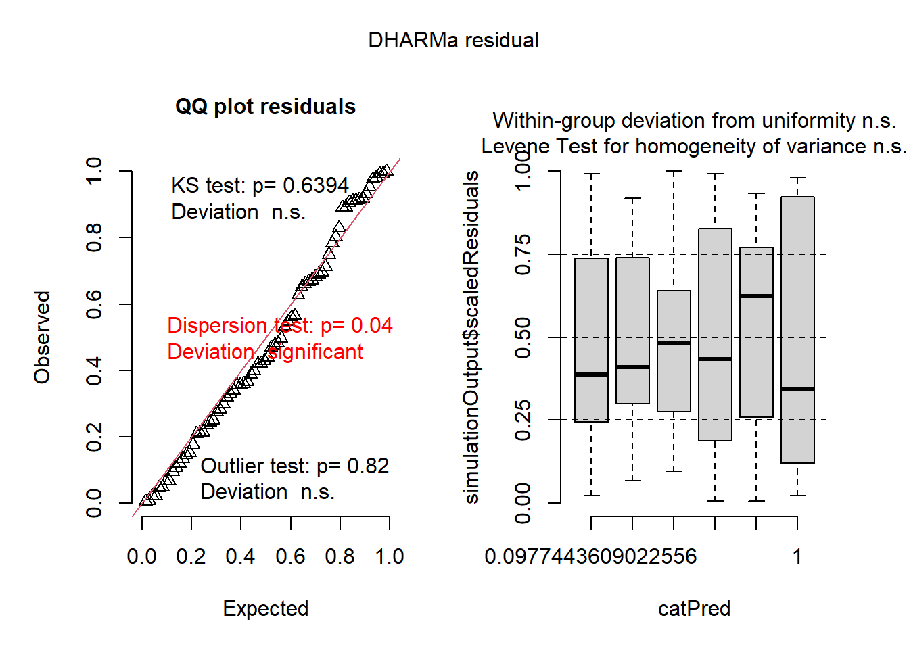
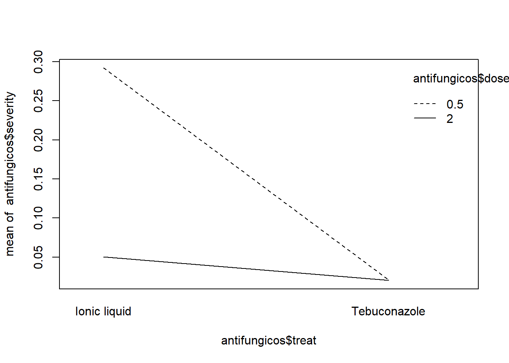
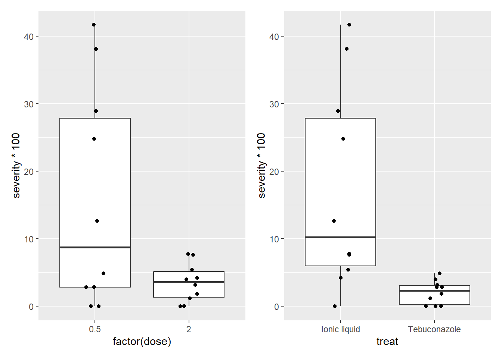

# ───────────────────────────────────────────────────────────────
# Pacotes necessários
library(DHARMa)
library(car)
library(multcomp)
library(emmeans)
library(gsheet)
library(ggplot2)
library(tidyverse)
library(patchwork)
library(agricolae)
library(epifitter)Aula 4 - Modelos Lineares Generalizados e Interações
Aula 4 – 23/04/2025
Disciplina: FIP606 – Análise e Visualização de Dados em Fitopatologia
Professor: Emerson Del Ponte
✦ Objetivos da aula:
- Avaliar modelos com resíduos simulados (pacote
DHARMa) - Introduzir modelos lineares generalizados (GLMs)
- Avaliar interações entre fatores com ANOVA e
emmeans - Usar transformações, identificar efeitos principais e interações
- Gerar gráficos de interação e comparação de médias
# ───────────────────────────────────────────────────────────────
insetos <- InsectSprays
m3 <- lm(sqrt(count) ~ spray, data = insetos)
hist(residuals(m3))
qqnorm(residuals(m3))
qqline(residuals(m3))
shapiro.test(residuals(m3))
Shapiro-Wilk normality test
data: residuals(m3)
W = 0.98721, p-value = 0.6814anova(m3)Analysis of Variance Table
Response: sqrt(count)
Df Sum Sq Mean Sq F value Pr(>F)
spray 5 88.438 17.6876 44.799 < 2.2e-16 ***
Residuals 66 26.058 0.3948
---
Signif. codes: 0 '***' 0.001 '**' 0.01 '*' 0.05 '.' 0.1 ' ' 1# Avaliação de resíduos do modelo anterior (paramétrico)
m3
Call:
lm(formula = sqrt(count) ~ spray, data = insetos)
Coefficients:
(Intercept) sprayB sprayC sprayD sprayE sprayF
3.7607 0.1160 -2.5158 -1.5963 -1.9512 0.2579 plot(simulateResiduals(m3))
# ───────────────────────────────────────────────────────────────
# GLM com distribuição Poisson (modelo para contagens)
m4 <- glm(count ~ spray, data = insetos, family = poisson)
anova(m4)Analysis of Deviance Table
Model: poisson, link: log
Response: count
Terms added sequentially (first to last)
Df Deviance Resid. Df Resid. Dev Pr(>Chi)
NULL 71 409.04
spray 5 310.71 66 98.33 < 2.2e-16 ***
---
Signif. codes: 0 '***' 0.001 '**' 0.01 '*' 0.05 '.' 0.1 ' ' 1Anova(m4)Analysis of Deviance Table (Type II tests)
Response: count
LR Chisq Df Pr(>Chisq)
spray 310.71 5 < 2.2e-16 ***
---
Signif. codes: 0 '***' 0.001 '**' 0.01 '*' 0.05 '.' 0.1 ' ' 1plot(simulateResiduals(m4))
# Médias ajustadas e comparação
medias_m4 <- emmeans(m4, ~ spray, type = "response")
cld(medias_m4) spray rate SE df asymp.LCL asymp.UCL .group
C 2.08 0.417 Inf 1.41 3.08 1
E 3.50 0.540 Inf 2.59 4.74 12
D 4.92 0.640 Inf 3.81 6.35 2
A 14.50 1.100 Inf 12.50 16.82 3
B 15.33 1.130 Inf 13.27 17.72 3
F 16.67 1.180 Inf 14.51 19.14 3
Confidence level used: 0.95
Intervals are back-transformed from the log scale
P value adjustment: tukey method for comparing a family of 6 estimates
Tests are performed on the log scale
significance level used: alpha = 0.05
NOTE: If two or more means share the same grouping symbol,
then we cannot show them to be different.
But we also did not show them to be the same. # ───────────────────────────────────────────────────────────────
# Interações entre tratamento e dose - antifúngicos
antifungicos <- gsheet2tbl("https://docs.google.com/spreadsheets/d/1bq2N19DcZdtax2fQW9OHSGMR0X2__Z9T/edit?gid=2023059672#gid=2023059672")
# Gráfico de interação
interaction.plot(antifungicos$treat, antifungicos$dose, antifungicos$severity)
# Visualizações individuais
p1 <- antifungicos |>
ggplot(aes(factor(dose), severity * 100)) +
geom_boxplot() +
geom_jitter(width = 0.1)
p2 <- antifungicos |>
ggplot(aes(treat, severity * 100)) +
geom_boxplot() +
geom_jitter(width = 0.1)
# Combinação dos gráficos
p1 + p2
# ───────────────────────────────────────────────────────────────
# Modelo de interação completo e diagnóstico
m_anti <- lm(severity ~ treat * dose, data = antifungicos)
anova(m_anti)Analysis of Variance Table
Response: severity
Df Sum Sq Mean Sq F value Pr(>F)
treat 1 0.113232 0.113232 30.358 4.754e-05 ***
dose 1 0.073683 0.073683 19.755 0.0004077 ***
treat:dose 1 0.072739 0.072739 19.502 0.0004326 ***
Residuals 16 0.059678 0.003730
---
Signif. codes: 0 '***' 0.001 '**' 0.01 '*' 0.05 '.' 0.1 ' ' 1plot(simulateResiduals(m_anti))
# Médias ajustadas por dose dentro de cada tratamento
media_anti <- emmeans(m_anti, ~ dose | treat)
media_antitreat = Ionic liquid:
dose emmean SE df lower.CL upper.CL
0.5 0.2921 0.0273 16 0.23420 0.3500
2.0 0.0501 0.0273 16 -0.00781 0.1080
treat = Tebuconazole:
dose emmean SE df lower.CL upper.CL
0.5 0.0210 0.0273 16 -0.03690 0.0789
2.0 0.0202 0.0273 16 -0.03768 0.0781
Confidence level used: 0.95 cld(media_anti)treat = Ionic liquid:
dose emmean SE df lower.CL upper.CL .group
2.0 0.0501 0.0273 16 -0.00781 0.1080 1
0.5 0.2921 0.0273 16 0.23420 0.3500 2
treat = Tebuconazole:
dose emmean SE df lower.CL upper.CL .group
2.0 0.0202 0.0273 16 -0.03768 0.0781 1
0.5 0.0210 0.0273 16 -0.03690 0.0789 1
Confidence level used: 0.95
significance level used: alpha = 0.05
NOTE: If two or more means share the same grouping symbol,
then we cannot show them to be different.
But we also did not show them to be the same. # Coeficiente de variação
cv.model(m_anti)[1] 63.7165# ───────────────────────────────────────────────────────────────
# Análise de oídio com AUDPC (épifoca)
oidio <- PowderyMildew
# Visualização inicial com filtragem
oidio |>
filter(irrigation_type %in% c("MS", "MS above canopy", "Overhead")) |>
ggplot(aes(time, sev)) +
geom_point() +
facet_grid(moisture ~ irrigation_type)
# ───────────────────────────────────────────────────────────────
# Cálculo do AUDPC e visualização por irrigação
oidio2 <- oidio |>
filter(irrigation_type %in% c("MS", "MS above canopy", "Overhead"))
oidio3 <- oidio2 |>
group_by(irrigation_type, moisture, block) |>
summarize(AUDPC = AUDPC(time, sev), .groups = "drop")
oidio3 |>
ggplot(aes(irrigation_type, AUDPC, color = moisture)) +
geom_point(size = 2) +
scale_y_continuous(limits = c(0, 20))
# ───────────────────────────────────────────────────────────────
# Modelo de interação: AUDPC ~ irrigação * umidade
model_oidio <- lm(AUDPC ~ irrigation_type * moisture, data = oidio3)
anova(model_oidio)Analysis of Variance Table
Response: AUDPC
Df Sum Sq Mean Sq F value Pr(>F)
irrigation_type 2 134.341 67.170 451.721 5.073e-12 ***
moisture 1 6.680 6.680 44.924 2.188e-05 ***
irrigation_type:moisture 2 5.104 2.552 17.162 0.0003022 ***
Residuals 12 1.784 0.149
---
Signif. codes: 0 '***' 0.001 '**' 0.01 '*' 0.05 '.' 0.1 ' ' 1plot(simulateResiduals(model_oidio))
# Médias ajustadas
medias_oidio <- emmeans(model_oidio, ~ irrigation_type | moisture)
medias_oidiomoisture = High moisture:
irrigation_type emmean SE df lower.CL upper.CL
MS 8.52 0.223 12 8.04 9.01
MS above canopy 3.99 0.223 12 3.51 4.48
Overhead 3.68 0.223 12 3.20 4.17
moisture = Moderate moisture:
irrigation_type emmean SE df lower.CL upper.CL
MS 11.18 0.223 12 10.70 11.67
MS above canopy 4.86 0.223 12 4.37 5.34
Overhead 3.81 0.223 12 3.33 4.30
Confidence level used: 0.95 cld(medias_oidio)moisture = High moisture:
irrigation_type emmean SE df lower.CL upper.CL .group
Overhead 3.68 0.223 12 3.20 4.17 1
MS above canopy 3.99 0.223 12 3.51 4.48 1
MS 8.52 0.223 12 8.04 9.01 2
moisture = Moderate moisture:
irrigation_type emmean SE df lower.CL upper.CL .group
Overhead 3.81 0.223 12 3.33 4.30 1
MS above canopy 4.86 0.223 12 4.37 5.34 2
MS 11.18 0.223 12 10.70 11.67 3
Confidence level used: 0.95
P value adjustment: tukey method for comparing a family of 3 estimates
significance level used: alpha = 0.05
NOTE: If two or more means share the same grouping symbol,
then we cannot show them to be different.
But we also did not show them to be the same. # Coeficiente de variação do modelo
cv.model(model_oidio)[1] 6.418205